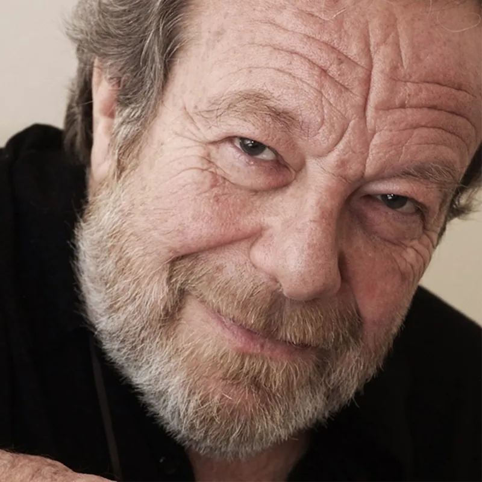

Edoardo De Angelis
Dall’inizio degli anni settanta, epoca d’oro del Folkstudio e del cantautorato italiano, ha scritto per sé e per altri, prodotto diversi album di artisti nascenti che si sarebbero poi affermati (Francesco De Gregori) e altri nel pieno della maturità artistica (l’indimenticabile Sergio Endrigo), credendo fortemente nella diffusione dello scrivere e interpretare la canzone come strumento principe della narrazione. Di questo suo amore per la canzone come forma d’arte, De Angelis ha disseminato il suo più che quarantennale cammino, iniziato avvicinando i propri testi alle musiche di Lucio Dalla (Sulla rotta di Cristoforo Colombo), e regalando la storia de La casa di Hilde alla sensibilità di Francesco De Gregori, fino all’incisione di Lella, simile a una scena in bianco e nero di pasoliniana memoria. Ha vinto con Lella il Cantagiro 1971 (sez. Giovani), ed è stato finalista del Festivalbar 1984 con “Mia madre parla a raffica”, e del Disco per l’Estate 1992, insieme a Paola Turci, con “Lettera per te”. Parlano della sua instancabile attività le numerose collaborazioni: l’esperienza con la Schola Cantorum; le canzoni scritte per Capitolo 6, Riccardo Cocciante, Lucio Dalla, Francesco De Gregori, Mina, Amedeo Minghi, Ricchi e Poveri, Marisa Sannia, Tosca, Vianella, Edoardo Vianello; le iniziative legate al mondo dei ragazzi e delle scuole (Parola di Cantautore, NET Neverending Tour); le rubriche giornalistiche, radiofoniche e televisive curate, e i suoi libri “Scrivere canzoni” e “Te la ricordi Lella?”. Quarant’anni di storie e canzoni; le etichette discografiche per cui ha inciso: Valiant, RCA Italiana, Durium, Fonit Cetra, Ricordi, Virgin, BMG Ariola, il Manifesto cd, Rai Trade, Helikonia, Il Cantautore Necessario; le direzioni artistiche, da “Cantare in Italiano” a “D’autore”; l’incontro professionale con Fabrizio De André; più di venti album pubblicati, e gli artisti ospitati: Luca Barbarossa, Franco Battiato, Angelo Branduardi, Bungaro, Francesco Cafiso, Andrea Camilleri, Mario Castelnuovo, Mimmo Cuticchio, Lucio Dalla, Francesco Di Giacomo, Sergio Endrigo, Lucilla Galeazzi, Francesco Giunta, Neri Marcorè, Amedeo Minghi, Marco Paolini, Annie Robert, Ron, Franco Simone, Ambrogio Sparagna, Tosca, Paola Turci, Antonello Venditti. Tra le innumerevoli esibizioni vanno ricordate alcune apparizioni teatrali: “La Buona Novella”, al Teatro Biondo di Palermo, con Giorgio Albertazzi e il Gruppo Polifonico Del Balzo; il tour di “Altre Emozioni – Omaggio a Sergio Endrigo” con Orchestra Sinfonica e Coro del Friuli Venezia Giulia diretti da Valter Sivilotti, accanto a Tosca; “Summertime – Ninnananne dalla Sicilia e dal Mondo” del Teatro Massimo di Palermo, con la Sinfonica residente diretta da Valter Sivilotti, accanto ad Antonella Ruggiero, e le numerose repliche di “Due amici dopo cena” con Neri Marcorè. E’ tra i soci fondatori delle Associazioni “Canzoni di Confine”, operante nella Regione Friuli Venezia Giulia. E’ stato direttore dei progetti speciali di “Folkest-International Folk Festival”.
www.edoardodeangelis.it